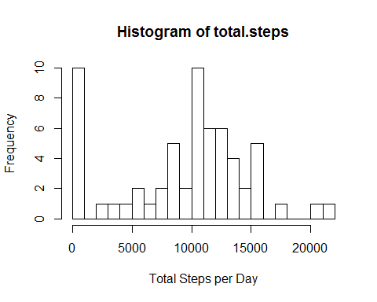
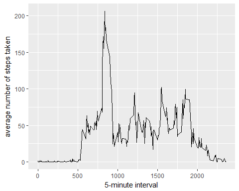
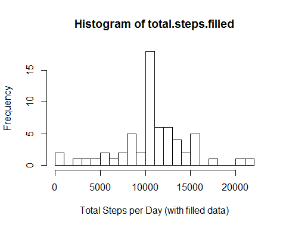
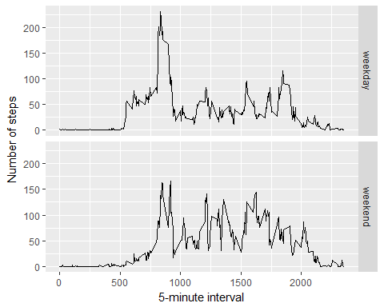

Reproducible Research: Peer Assessment 1
Read data and store data frame
data
<- read.csv("activity.csv")
library(ggplot2)
## Warning: package 'ggplot2' was built under R version 3.4.3
total.steps
<- tapply(data$steps, data$date,
FUN = sum, na.rm = TRUE)
hist(total.steps, xlab = "Total Steps per Day", breaks = 20)

mean(total.steps, na.rm=TRUE)
## [1] 9354.23
median(total.steps, na.rm=TRUE)
## [1] 10395
library(ggplot2)
averages <- aggregate(x = list(steps = data$steps),
by = list(interval = data$interval),
FUN = mean,
na.rm = TRUE)
ggplot(data = averages, aes(x = interval, y = steps)) +
geom_line() +
xlab("5-minute interval") +
ylab("average number of steps
taken")

averages[which.max(averages$steps), ]
##
interval steps
## 104 835
206.1698
table(is.na(data$steps))
##
## FALSE TRUE
## 15264 2304
Replace each missing value with the mean value of its 5-minute interval
fill.value
<- function(steps, interval) {
filled <- NA
if (!is.na(steps))
filled <- c(steps) else filled <- (averages[averages$interval == interval, "steps"])
return(filled)
}
filled.data
<- data
filled.data$steps <- mapply(fill.value, filled.data$steps, filled.data$interval)
total.steps.filled
<- tapply(filled.data$steps, filled.data$date,
FUN = sum)
hist(total.steps.filled, xlab = "Total Steps per Day (with
filled data)", breaks
= 20)

mean(total.steps.filled)
## [1] 10766.19
median(total.steps.filled)
## [1] 10766.19
weekday.or.weekend
<- function(date) {
day <- weekdays(date)
if (day %in% c("Monday", "Tuesday", "Wednesday", "Thursday", "Friday"))
return("weekday") else if (day %in% c("Saturday", "Sunday"))
return("weekend") else stop("invalid date")
}
filled.data$date <- as.Date(filled.data$date)
filled.data$day <- sapply(filled.data$date, FUN = weekday.or.weekend)
averages
<- aggregate(steps ~ interval + day, data = filled.data, mean)
ggplot(averages, aes(interval, steps)) + geom_line() + facet_grid(day ~ .) +
xlab("5-minute interval") + ylab("Number of steps")
